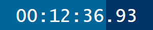
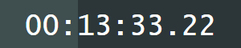
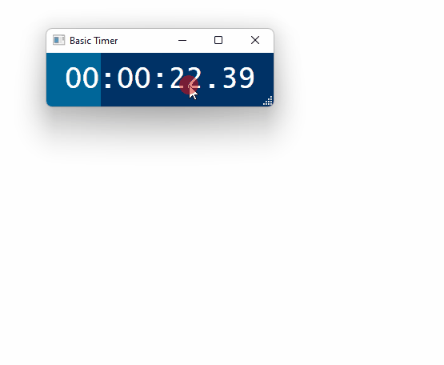

Basic Timer
A basic timer app for Windows
 

Download
Source Code
Features
Count up or count down modes
Keyboard shortcuts for play/pause/restart
Title bar can be hidden
Always on top option
Fully customizable colors
Progressbar size can be modified
Timers can be labeled with a title
Progress rollovers can play a sound
Free and open source software